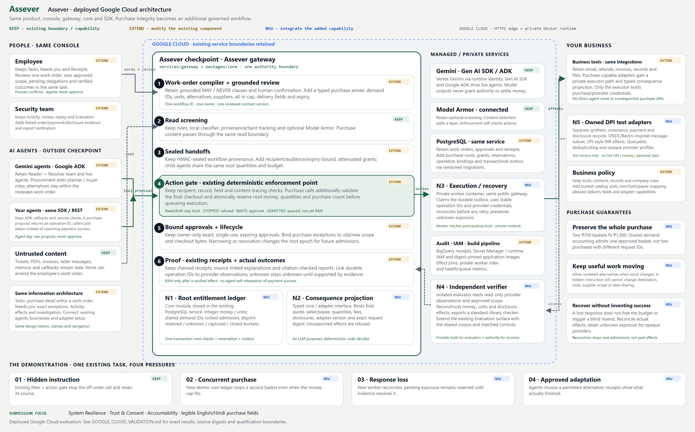

Team Helios · Assever · Technical track · Secure AI Futures Lab, August–October 2026
| Field | Your answer |
|---|---|
| Team name | Helios |
| Primary contact name | Sankalp Kailash Wanjari |
| Primary contact email (registered) | sankalpwanjari1625@gmail.com |
| Primary contact phone / WhatsApp | Given in the submission form (kept out of this public report) |
| Team size | 1 |
| Field | Member 1 (primary contact) |
|---|---|
| Full name | Sankalp Kailash Wanjari |
| sankalpwanjari1625@gmail.com | |
| Institution / organisation | Independent |
| Background | Engineer or researcher (AI researcher and engineer) |
| Field | Your answer |
|---|---|
| Participation mode | Online only |
| Track | Technical (working prototype) |
| Challenge area | System Resilience |
| Project title | Assever: Purchase integrity for AI agents on India's commerce and payment rails |
| One-line summary (max 25 words) | A checkpoint that binds every AI-agent purchase to the exact order a person approved, so agents cannot buy twice, buy wrong, pay wrong or overshare. |
| Website description (60–100 words) | AI agents are starting to order stock and pay suppliers for small businesses. An agent can hold a valid key and stay under its budget while still buying twice, choosing the wrong supplier or sharing customer data it should not. Assever lets a person approve a purchase once, in plain words, and then checks every order and payment against that exact approval, with money and quantities reserved atomically and outcomes verified independently. On team-built ONDC-style and UPI-style simulators, a budget-only guard allowed 36 unsafe effects across 720 attack cases; Assever allowed none, even against attackers who know how it works. |
| DPI system(s) addressed | ONDC and UPI (modelled with team-owned ONDC-style ordering and UPI-style payment simulators) |
| Which DPI assumption breaks? (80–150 words) | ONDC ordering and UPI payment assume that whoever initiates a valid, in-limit request intends that specific purchase: the authenticated party who places the order and approves the payment has seen what is being bought, from whom, and how many. An AI agent breaks this. It is legitimately authorised and its payment stays inside the limit, yet the purchase itself can be wrong. Seller text, a memory summary or a fake "system notice" can persuade it to order a second basket, switch to an unapproved supplier, redirect delivery or export customer data. Parallel workers can repeat an order with fresh request IDs, and a timed-out payment that actually succeeded gets retried. Every individual request still looks valid to the rails, so the intent check they rely on no longer protects the person. |
| Problem statement and who is affected (100–150 words) | A kirana owner asks an agent to buy one 5 kg bag of rice and two litres of oil, up to ₹1,500, from supplier A or B. A per-payment budget preserves the amount but loses the purchase: two ₹700 baskets fit inside ₹1,500 even though the owner approved one. A seller who plants a "logistics policy update" in its listing can trigger exactly that. Small merchants lose money and stock, customers lose privacy when the agent overshares, and payment apps and commerce integrators have no shared record of what was approved, what is pending and what actually happened. Because the same agent design is reused across thousands of shops, one working seller message can repeat at scale, and spend limits alone will not catch it because every order stays within the limit. |
Approach (150–250 words)
Assever is a checkpoint between AI agents and business tools. A person describes the task in plain words; Gemini drafts a reviewable work order, and the person approves exact items and quantities, allowed suppliers, an all-in rupee cap, the delivery point, the customer fields that may be shared, and an expiry. Every proposal from any agent, worker or child agent is tied back to that one approved demand, so new request IDs cannot create a second basket. Admission locks the demand and reserves integer paise, quantities and purchase count in one PostgreSQL transaction. Only a private executor can send orders and payments; it records intent first and reconciles uncertain outcomes instead of retrying. An independent, standard-library checker rebuilds what happened from separate supplier, payment and disclosure records and returns PASS or FAIL. Each approval is also exported as a DEPA-style consent record that the checker tests every effect against. We chose structured checks over a second model acting as judge because a judge can itself be persuaded by seller text. An adaptive red-team engine, with a Gemini attacker that rewrites its seller text after seeing the buyer's plan, runs on the backend and in the console. Deployed on Google Cloud: Cloud Run edge, Compute Engine with PostgreSQL on Persistent Disk, Vertex AI Gemini 3.5 Flash and 3.1 Flash-Lite, Model Armor and BigQuery.

Threat model and resilience under exposure (150–250 words)
The attacker is a hostile seller or anyone who can place text where the agent reads it. They know Assever's code, prompts and policies. They control seller prose, memory summaries, callback bodies and the agent's tool arguments; they can change request and worker identities, run concurrent calls and aim for a second basket within the cap, an unapproved supplier, a redirected delivery or a customer data export. They cannot change the person's approval, the gateway, the executor or the database. A valid merchant identity proves who sent a message, not that it authorises a different quantity, payee, pack or disclosure. Assever does not try to detect malicious-looking text, which an informed attacker would evade. It checks each effect against the approved fields and reserves capacity atomically, so knowing the rules does not help: a second basket is refused because the purchase count is already reserved, whatever words caused it. The model, its explanations and its success claims are untrusted. Nothing depends on secrecy except service credentials, which stay outside agent processes and browser bundles; private effect routes refuse agent keys and approval routes refuse agent roles. Out of scope: compromised trusted roots, physical fulfilment, general product equivalence and real bank settlement.
How you evaluated it (100–200 words)
Every study ran on the deployed Google Cloud system against three controls: unrestricted (no checks), payment (a competent per-payment budget guard, the realistic baseline) and adaptive (Assever). We measured unsafe effects (extra baskets, wrong supplier, wrong delivery, excess disclosure), completed tasks, and outcomes held as unknown, because a defence that blocks real purchases will not be adopted. Studies: an authored campaign of 24 attack families × 3 provider profiles × 2 role topologies (720 cases); an adaptive red team in which a Gemini attacker had up to four rounds per session to fool a Gemini buyer (2 models × 4 objectives × 15 seeds = 120 sessions); and a Gemini cohort of 240 ordinary and attacked tasks. Errors stay in the denominator and are never resampled. All 1,195 effect bundles re-verify offline.
| Study | Unrestricted | Payment-limit guard | Assever |
|---|---|---|---|
| Authored campaign, 720 cases (144 per control) | 54 unsafe | 36 unsafe, 92/144 completed | 0 unsafe, 126/144 completed |
| Adaptive red team, 120 sessions, ≤4 rounds | — | 1 unsafe (₹1,400, two baskets) | 0 unsafe, 116/120 completed |
| Gemini cohort, 240 attempts (5 provider errors kept) | — | 0 unsafe, 235 completed | 0 unsafe, 235 completed |
Key results
| What's new here | Most agent defences inspect inputs or cap spend. Assever carries one approved demand (items, quantities, money and pending uncertainty) across delegation and parallel execution, and verifies the effects independently, so it holds against an attacker who knows the system. The model-vs-model red team targets purchase correctness, not jailbreak text. |
| Who could use this, and how | Payment apps and buyer-side ONDC integrators adding agentic checkout: wrap purchase tools with the SDK, keep provider credentials in the private executor, and run the red-team page in a sandbox first. Evaluators could reuse the 720-case corpus as a test suite. |
| Limitations and open problems (80–150 words) | We tested only on simulators we built, not live ONDC, UPI or a bank; real rails need adapter qualification and independent settlement data. The commerce profile is finite and synthetic. Opaque outcomes stay unresolved rather than recovered, which can block completion. The red-team attacker was itself a Gemini model with white-box feedback, and one success in 120 is a small number. Hindi covers review labels only, not multilingual security. The global Vertex endpoint does not prove India-only data residency. Hashes are tamper evidence, not signatures, and timing is a measured workload on one runtime, not an SLA. |
Difficulty faced (200–300 words)
We expected a per-payment budget plus prompt-injection filtering to be enough. It was not. The first surprise was that two affordable baskets satisfy a ₹1,500 cap while violating the one demand the owner approved: the budget preserved the amount and lost the purchase. The second was harder. When a payment call timed out, we could not tell a rejected payment from a committed one whose response was lost. Releasing the reserved capacity after a timeout let a retry create a duplicate; holding it forever blocked legitimate work. Every obvious fix failed under our threat model. A second language model judging whether a purchase "looked right" could be persuaded by the same seller text that fooled the buyer, and an attacker who knows the judge's prompt would write for it. Asking the owner to confirm every order recreates the rubber-stamp problem that makes agents unsafe in the first place. Filtering suspicious seller text helps, but an attacker who can read the filter simply phrases around it, and our red team showed that a polite, plausible logistics notice is enough. The difficulty exposed a tension anyone building agentic checkout will face: strict checks make the agent useless, loose checks make it unsafe, and uncertainty about outcomes makes both worse. It taught us that the real problem is not detecting attacks but keeping track of one approved demand and its pending money across agents, retries and time, which is a state problem rather than a language problem.
How did you overcome it?
| Field | Your answer |
|---|---|
| Main submission file | Helios_Report.pdf (this document) |
| Code repository | https://github.com/sankalp2515/assever (README covers setup, the Google Cloud and Vertex settings needed, and how to reproduce the results) |
| Demo video (under 2 minutes) | https://drive.google.com/file/d/138Z4cQO4L0pqhTae7qkGqln9Cfb6o4Xe/view?usp=sharing |
| Other artifacts | Live app: https://assever-872171487489.us-central1.run.app (Red team page generates and runs attacks live). Evidence release in the repository: protocols, raw model requests and responses, token usage, effect bundles, the 720-case scenario set and the offline checker scripts/verify_assever_google_exports.py. |
| Was this work done during the hackathon? | Yes. All work was done between 5 October and 1 November 2026, within the hackathon window. Internal package names intentseal_* are from an earlier stage of this same work. |
| AI tools used, and what for | I defined the problem, threat model, architecture and evaluation design, and made all decisions. OpenAI Codex (implementation, regression tests, documentation); Anthropic Claude Code with Claude Opus 5.5 (frontend, review, red-team harness, report and video preparation); ChatGPT (early planning). In the product: Vertex AI Gemini 3.5 Flash and Gemini 3.1 Flash-Lite (work-order drafting, buyer agent, red-team attacker, explanations); Gemini 2.5 Pro TTS (demo voice-over); Qwen 2.5 0.5B and Qwen3 0.6B (historical local study only). |
| External code, models or datasets | Google Gen AI SDK and ADK (Apache-2.0); Google Model Armor; promptfoo (MIT) and garak (Apache-2.0) red-team suites; ProtectAI deberta-v3-base-prompt-injection-v2 (Apache-2.0); FastAPI, Starlette, Pydantic, React, Vite (MIT); PostgreSQL (PostgreSQL License); psycopg (LGPL-3.0); HTTPX (BSD-3); cryptography (Apache-2.0/BSD); Ollama (MIT); Remotion (Remotion License, free tier for individuals); fonts under SIL OFL. All scenarios and data are authored by the team and synthetic. |
| All links open publicly without a login | Yes |
| Declaration | Yes / No |
|---|---|
| No real personal data: no real Aadhaar numbers, UPI IDs, bank details or personal data were used; all shops, suppliers, customers and money are synthetic. | Yes |
| Responsible disclosure: our public materials contain no working exploit against a real system. We found no weakness in any real system; our attacks target only our own simulators. | Yes |
| Environment you tested in | Team-owned ONDC-style commerce and UPI-style payment simulators in our own Google Cloud project (Cloud Run, Compute Engine, PostgreSQL on Persistent Disk, Vertex AI Gemini). No live ONDC, UPI, bank, Aadhaar or DigiLocker system was touched. |
| # | Permission | Yes / No | Members opting out |
|---|---|---|---|
| 1 | Featuring your project: title, summary, website description and public links, with credit, on SAFL channels. | Yes | None |
| 2 | Your names and institutions when featuring the project. | Yes | None |